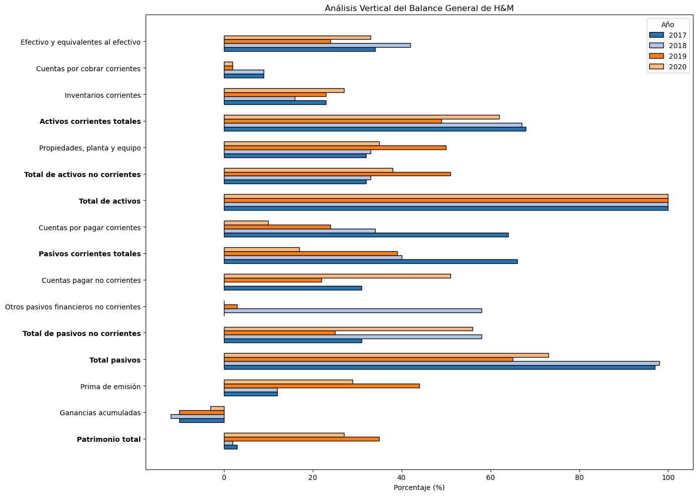
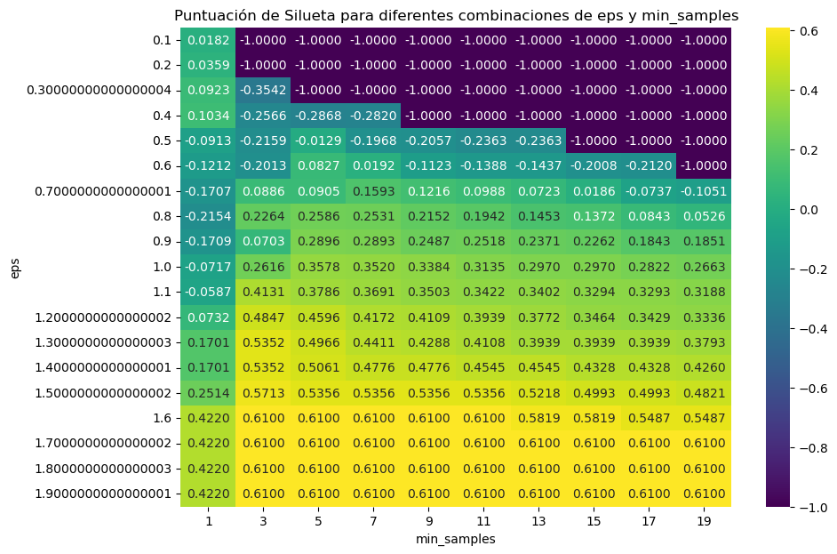

RNA en Keras para regresión¶
Los problemas de regresión usan las mismas arquitecturas de las redes neuronales artificiales que en los problemas de clasificación, pero los únicos tres cambios principales son los siguientes:
Output layer: se usa una única neurona en la capa de salida.
Función de activación en Output layer: generalmente no se agrega una función de activación en la capa de salida, se deja por defecto la que trae Keras que es la función de activación lineal. Esto se hace para que el valor de salida que será la predicción no tenga ningún límite; sin embargo, en algunos casos donde la predicción solo puede tomar valores positivos se agrega la función de activación
"relu".Función de pérdida y métrica de error: la métrica más usada es
"mse"o"mae"si el conjunto de entrenamiento presenta muchos valores atípicos.
import pandas as pd
import numpy as np
import matplotlib.pyplot as plt
df = pd.read_csv("Regression.csv", sep=";", decimal=",")
print(df.head())
X y
0 12.3 42.3
1 13.2 48.2
2 13.7 62.5
3 10.9 32.7
4 10.0 28.2
plt.scatter(df["X"], df["y"])
plt.xlabel("X")
plt.ylabel("y");

X = df[["X"]]
print(X.head())
X
0 12.3
1 13.2
2 13.7
3 10.9
4 10.0
X.shape[0]
10000
y = df["y"]
print(y.head())
0 42.3
1 48.2
2 62.5
3 32.7
4 28.2
Name: y, dtype: float64
Conjunto de train y test:¶
from sklearn.model_selection import train_test_split
X_train, X_test, y_train, y_test = train_test_split(
X, y, test_size=0.2, random_state=0
)
X.shape
(10000, 1)
X_train.shape
(8000, 1)
y_train.shape
(8000,)
Estandarización de las variables:¶
from sklearn.preprocessing import StandardScaler
sc = StandardScaler()
sc.fit(X_train)
X_train = sc.transform(X_train)
X_test = sc.transform(X_test)
X_train[0:5]
array([[ 0.8434668 ],
[-1.36763245],
[-0.28665059],
[ 0.64692465],
[ 0.15556926]])
X_test[0:5]
array([[ 0.05729818],
[-1.61331015],
[ 0.49951803],
[-1.07281922],
[-1.56417461]])
plt.scatter(X_train, y_train)
plt.xlabel("X_train")
plt.ylabel("y_train");

plt.scatter(X_test, y_test)
plt.xlabel("X_test")
plt.ylabel("y_test");

Arquitectura de la red:¶
from keras.models import Sequential
from keras.layers import Dense
model = Sequential()
model.add(Dense(4, activation="sigmoid", input_shape=(X.shape[1],)))
model.add(Dense(2, activation="sigmoid"))
model.add(Dense(1))
model.compile(loss="mse", optimizer="sgd")
history = model.fit(
X_train,
y_train,
validation_data=(X_test, y_test),
epochs=50,
batch_size=100,
verbose=1,
)
Epoch 1/50
80/80 [==============================] - 0s 3ms/step - loss: 1522.1787 - val_loss: 1066.6626
Epoch 2/50
80/80 [==============================] - 0s 1ms/step - loss: 1081.4514 - val_loss: 1066.3048
Epoch 3/50
80/80 [==============================] - 0s 1ms/step - loss: 1080.8998 - val_loss: 1065.4065
Epoch 4/50
80/80 [==============================] - 0s 1ms/step - loss: 1064.2806 - val_loss: 937.2089
Epoch 5/50
80/80 [==============================] - 0s 1ms/step - loss: 810.9926 - val_loss: 697.3342
Epoch 6/50
80/80 [==============================] - 0s 1ms/step - loss: 667.3729 - val_loss: 620.0729
Epoch 7/50
80/80 [==============================] - 0s 1ms/step - loss: 600.2650 - val_loss: 532.7441
Epoch 8/50
80/80 [==============================] - 0s 1ms/step - loss: 578.8715 - val_loss: 509.1744
Epoch 9/50
80/80 [==============================] - 0s 1ms/step - loss: 547.5605 - val_loss: 501.2608
Epoch 10/50
80/80 [==============================] - 0s 1ms/step - loss: 518.7123 - val_loss: 458.4481
Epoch 11/50
80/80 [==============================] - 0s 1ms/step - loss: 498.0142 - val_loss: 443.9291
Epoch 12/50
80/80 [==============================] - 0s 1ms/step - loss: 483.0516 - val_loss: 464.6451
Epoch 13/50
80/80 [==============================] - 0s 1ms/step - loss: 475.8992 - val_loss: 429.6647
Epoch 14/50
80/80 [==============================] - 0s 1ms/step - loss: 470.9014 - val_loss: 425.6642
Epoch 15/50
80/80 [==============================] - 0s 1ms/step - loss: 461.8326 - val_loss: 428.8443
Epoch 16/50
80/80 [==============================] - 0s 1ms/step - loss: 462.5401 - val_loss: 424.1435
Epoch 17/50
80/80 [==============================] - 0s 1ms/step - loss: 460.8448 - val_loss: 414.6677
Epoch 18/50
80/80 [==============================] - 0s 1ms/step - loss: 455.5728 - val_loss: 418.6729
Epoch 19/50
80/80 [==============================] - 0s 1ms/step - loss: 452.3359 - val_loss: 418.0386
Epoch 20/50
80/80 [==============================] - 0s 1ms/step - loss: 449.9522 - val_loss: 407.7674
Epoch 21/50
80/80 [==============================] - 0s 1ms/step - loss: 448.6400 - val_loss: 405.7125
Epoch 22/50
80/80 [==============================] - 0s 1ms/step - loss: 444.9068 - val_loss: 405.1957
Epoch 23/50
80/80 [==============================] - 0s 1ms/step - loss: 448.3814 - val_loss: 404.6567
Epoch 24/50
80/80 [==============================] - 0s 1ms/step - loss: 442.9962 - val_loss: 402.1682
Epoch 25/50
80/80 [==============================] - 0s 1ms/step - loss: 441.2330 - val_loss: 402.9997
Epoch 26/50
80/80 [==============================] - 0s 1ms/step - loss: 444.4854 - val_loss: 398.0827
Epoch 27/50
80/80 [==============================] - 0s 1ms/step - loss: 440.7505 - val_loss: 401.8700
Epoch 28/50
80/80 [==============================] - 0s 1ms/step - loss: 442.3171 - val_loss: 421.4348
Epoch 29/50
80/80 [==============================] - 0s 1ms/step - loss: 441.1275 - val_loss: 428.5614
Epoch 30/50
80/80 [==============================] - 0s 1ms/step - loss: 437.4442 - val_loss: 414.3510
Epoch 31/50
80/80 [==============================] - 0s 1ms/step - loss: 435.0782 - val_loss: 391.8944
Epoch 32/50
80/80 [==============================] - 0s 1ms/step - loss: 441.9836 - val_loss: 391.1235
Epoch 33/50
80/80 [==============================] - 0s 1ms/step - loss: 437.8896 - val_loss: 399.3710
Epoch 34/50
80/80 [==============================] - 0s 1ms/step - loss: 437.7604 - val_loss: 391.1223
Epoch 35/50
80/80 [==============================] - 0s 1ms/step - loss: 435.1554 - val_loss: 395.5753
Epoch 36/50
80/80 [==============================] - 0s 1ms/step - loss: 435.0929 - val_loss: 392.5070
Epoch 37/50
80/80 [==============================] - 0s 1ms/step - loss: 432.9144 - val_loss: 417.4420
Epoch 38/50
80/80 [==============================] - 0s 1ms/step - loss: 431.4852 - val_loss: 387.1242
Epoch 39/50
80/80 [==============================] - 0s 1ms/step - loss: 437.7747 - val_loss: 392.6847
Epoch 40/50
80/80 [==============================] - 0s 1ms/step - loss: 435.0337 - val_loss: 394.4157
Epoch 41/50
80/80 [==============================] - 0s 1ms/step - loss: 439.3347 - val_loss: 386.1708
Epoch 42/50
80/80 [==============================] - 0s 1ms/step - loss: 433.4551 - val_loss: 397.4804
Epoch 43/50
80/80 [==============================] - 0s 1ms/step - loss: 429.7581 - val_loss: 384.1105
Epoch 44/50
80/80 [==============================] - 0s 1ms/step - loss: 435.5625 - val_loss: 385.4286
Epoch 45/50
80/80 [==============================] - 0s 1ms/step - loss: 434.9523 - val_loss: 393.8757
Epoch 46/50
80/80 [==============================] - 0s 1ms/step - loss: 432.6330 - val_loss: 384.5046
Epoch 47/50
80/80 [==============================] - 0s 1ms/step - loss: 432.1599 - val_loss: 384.5741
Epoch 48/50
80/80 [==============================] - 0s 1ms/step - loss: 430.0432 - val_loss: 385.5528
Epoch 49/50
80/80 [==============================] - 0s 1ms/step - loss: 433.2350 - val_loss: 397.4208
Epoch 50/50
80/80 [==============================] - 0s 1ms/step - loss: 435.1403 - val_loss: 400.5745
Evaluación del desempeño:¶
model.evaluate(X_test, y_test)
63/63 [==============================] - 0s 734us/step - loss: 400.5745
400.574462890625
plt.plot(range(1, len(history.epoch) + 1), history.history["loss"], label="Train")
plt.plot(range(1, len(history.epoch) + 1), history.history["val_loss"], label="Test")
plt.xlabel("epoch")
plt.ylabel("Loss")
plt.legend();

y_pred = model.predict(X_test)
y_pred[0:5]
63/63 [==============================] - 0s 684us/step
array([[47.485523],
[98.69801 ],
[47.480114],
[66.20691 ],
[93.21688 ]], dtype=float32)
plt.scatter(X_test, y_test)
plt.scatter(X_test, y_pred, color="darkred");

¿Cómo cambia el resultado si no hace el escalado de variables?